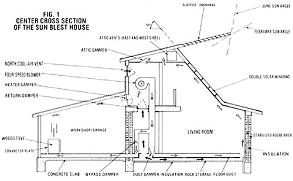
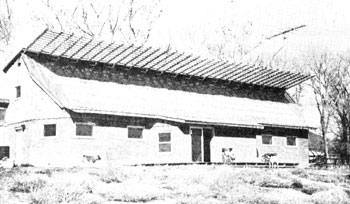
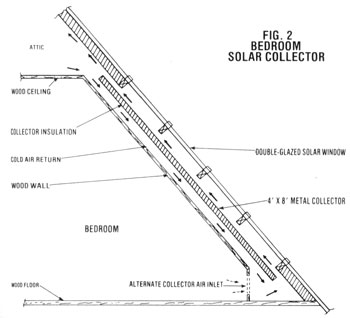

This ingenious solar adobe dwelling is "Home, Warm Home" even in -15° weather!
Bill and Wanda Colyer
My wife and I had several goals in mind when we set out to design and build our own home. We hoped to create an energy-conserving farmhouse that used both conventional building supplies and readily available native materials. Furthermore, we wanted our abode to employ only the renewable energy sources of sunlight and firewood for heating, yet at the same time-we planned to keep temperature fluctuations to a minimum.
Well, after a lot of planning, replan ning , and trial-and-error building, our "Sun Blest" home is complete . . . and it's a grand success. The northern New Mexico house (we live three miles west of Taos) has kept us warm during the -15°F cold spells that annually hit our farming area . . . and helps cool our family during the hot days of summer as well!
BLEST BE THE SUN THAT SHINES
As you can see in the accompanying photo, the entire second floor of our long and lean (69'7" X 23'3") dwelling is covered by a huge south-facing window. In the center of the house, any light passing through this double layered Kalwall Sunlite reinforced polyester glazing goes directly to the second-floor balcony and below-through a large open space-to our living-room/greenhouse area. At both ends of the building, however, admitted sunshine hits a series of simple solar collectors (constructed of insulated sheet steel that has been covered with 3-M's Nextel Velvet Coating 101-C10), which are separated from the two upstairs bedrooms by wooden inner walls (see Fig. 2).
All the sun-warmed air-including that heated in the home's center space and by our seven 4' X 8' collectors-rises, by convection, to the home's attic. From there, it's pulled down to the ground floor by a four-speed blower, and routed through ductwork either to the rock heatstorage bin constructed beneath the ground floor or-if we need immediate warming-through an open subfloor to the entire perimeter of the home (see Fig. 1). Either way, the air eventually circulates back to the attic by way of the inside walls of the house.
The blower can easily route the air in a complete circuit several times in one hour, but-since the below-floor passageways distribute the moving air all around the inside borders of the house-we never notice the "spread thin" breeze. In addition, as the rising currents pass along our ground-floor adobe walls, the excellent thermal energy storage material absorbs more of the circulating heat . . . and gradually radiates the warmth into the living area. We further improved the heat-storing capabilities of our first-floor walls by putting inch-thick urethane slab insulation between the inner and outer adobe brick layers. (Incidentally, the walls were constructed by the CINVA Ram process described in MOTHER NO. 39! )
Outside the front of the house, we erected a high "slattice" of 2 X 6 lumber, as shown in the photo. The cross sections of this wooden gridwork were angled so as to block out summer sunlight while leaving openings for snow-which otherwise might accumulate and eventually break the overhang-to fall through. We also added some short pieces of rightangled metal on the underside of the slattice. These "drip lips" interrupt the flow of rain or melted snow on the overhang and keep the runoff from pouring onto the house.
Although our home's solar heating system can keep the main building's 1,800 square feet warm during most cold weather (especially since we cover the center windows with reflective aluminized-mylar roll blinds at dusk), we do need to supplement the sun-given heat with wood energy whenever the nights drop below 0°F or following several consecutive cloudy winter days. In anticipation of such times, we built a 520-square-foot garage/workshop at the back of the house . . . and equipped the room with a Riteway 37 woodburning stove. We also placed black sheetmetal plates 1-1/2 inches away from the sides of this heat-Air warmed in the space between these convection plates and the wood stove rises along the garage's slanted roof and runs through an open damper into the second-floor blower room. From there, It's circulated through the house.
The Sun Blest House incorporates some other energy-saving features, as well. For example, we installed three fin covered tubular heat exchangers (obtained as inexpensive industrial surplus) in the attic. The cold water from our well is routed through these heat absorbers for prewarming before it goes to our standard electric water heater.
Finally, the blower and rock storage system can be used to circulate and store cool air (admitted through a back north vent) during summer nights . . . and thus helps "air condition" our abode in the hot months.
KEEP ON THE SUNNY SIDE
Solar energy alone keeps the temperature in the Sun Blest House from varying more than 15° (between 60° and 75°F) during most winter weather. And when a truly severe cold spell hits-such as one entire week last year when the days were cloudy and the nighttime temperature plunged to -20°F-the backup woodburner keeps our living quarters very comfortable. Our dwelling's heat is quite inexpensive, too: We've calculated that the blower uses about $8.00 of electricity a month during the cold season, while the woodstove consumes some three cords of fuel a year.
Furthermore, while it's satisfying our heating needs, the house-with its open, well-lighted living-room area, circular stairway, and indoor greenhouse-meets our aesthetic needs as well. The building did cost over $25 per square foot in 1976 (including the garage/ workshop), but-considering the fact that it's large, attractive, comfortable, and extremely economical to heat-we think we got ourselves areal "sun blest" bargain!
|
 |
 |
 |